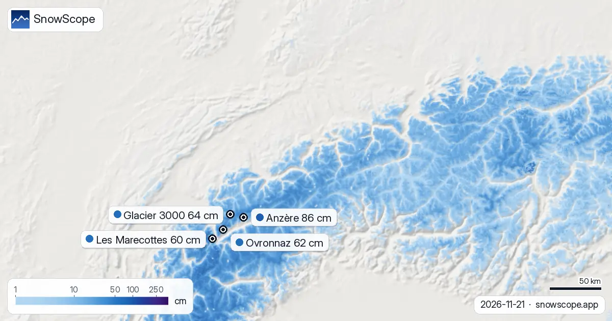

Swiss snow cover jumped 6,400 km² in seven days
In just seven days, Swiss mountains gained 6,410 km² of snow cover—a jump of 48 percent from a week ago. The satellite data shows the Alps now lie 64 percent white, with fresh snow from the past three days pushing coverage higher across all elevations.
See the live snow forecast for Anzère in the SnowScope appSnow depth, powder alerts and the 3D map, free.
How the week built up
The growth has been steady and steep. Last Sunday, 21 November, 13,470 km² of Switzerland's 31,030 km² study area held snow. By today, that figure sits at 19,880 km² covered. Each day this week added more white ground, with the peak around 20 November when fresh snow from the seventy-two-hour window reached 99 cm in the highest zones.
This surge marks a sharp turn from early November. The first real snow fell into the system only on 22 November according to our model, so we are in the opening phase of the season. That said, the past week's accumulation suggests the pattern has locked in: cold air is now holding over the high ranges.
| Day | White area | Most new snow in 3 days | Deepest resort |
|---|---|---|---|
| Monday 16 November | 16,510 km² | 22 cm | Ovronnaz |
| Tuesday 17 November | 14,750 km² | 45 cm | Zermatt |
| Wednesday 18 November | 16,060 km² | 64 cm | Glacier 3000 |
| Thursday 19 November | 18,160 km² | 83 cm | Glacier 3000 |
| Friday 20 November | 19,900 km² | 99 cm | Glacier 3000 |
| Saturday 21 November | 19,880 km² | 81 cm | Anzère |

Where the snow sits today
The snow line now sits around 1,200 m elevation. Below that, coverage is sparse—only 4 percent of the zone between 500 m and 1,000 m holds snow, and depths average zero. The real snow begins at 1,000 m, where 61 percent of the band is covered with an average of 3 cm. From 1,500 m upward, coverage is nearly complete: at 1,500–2,000 m the mean depth is 11 cm at 98 percent cover; above 2,000 m, snow is thick and unbroken.
In the highest tier above 2,500 m, mean depths reach 30 cm across the full 100 percent white area. This is where most Swiss glacier and high-altitude ski terrain sits, so early-season runs are plausible at the top of the network already.

The regional leaders
Two regions have outpaced the rest. The Valais Alps, home to Anzère, Zermatt, and Ovronnaz, picked up 164 cm in the past seventy-two hours—the highest total we measure. The Bernese Oberland, where Glacier 3000 operates, added 115 cm in the same window.
Anzère leads today with 86 cm at its measured point, followed by Ovronnaz at 62 cm and Zermatt at 60 cm. All three sit well above their typical mid-November depth; Anzère is 338 percent of normal for this date. Glacier 3000, at 64 cm, has accumulated 98 cm over three days and sits 308 percent of normal—a sign that the high glacier zone is capturing moisture from the systems pushing in from the northwest.
What fell and what comes next
In the past twenty-four hours alone, the highest zones received 16 cm of new snow. Over the past three days, parts of the Valais Alps saw 164 cm accumulate, while wider areas above 2,000 m averaged around 81 cm across Switzerland overall. This is a heavy three-day push for late November.
The forecast shows no letup. Tomorrow, 22 November, we expect the heaviest single day: up to 40 cm in the summit zones. Over the next three days, the high mountains could see another 59 cm on top of what fell this week. By the end of November, our longer forecast suggests a quieter week two, but the next seven days should bring around 74 cm more to the high peaks.
Trend across the Alps this week
Neighbouring Austria has seen similar activity but at lower intensity: 56 percent snow cover with 35 cm forecast for the next week. France is in a different pattern—only 14 percent white ground in our study area, though the Orelle region in the High Alps has captured 136 cm and shows 92 cm ahead. The systems are tracking through the Swiss arc hardest.
The uncertainty in all these forecasts remains real. Early-season snow is thin where it has just landed, and in some mid-altitude zones—between 1,000 m and 1,500 m—rocks may still break the surface. Check the official avalanche bulletin before any off-piste venture. For piste skiers, upper elevations offer the safest and deepest riding.
What the numbers mean
A 48 percent gain in one week is significant for late November. The white share climbing to 64 percent of mapped terrain is well above the typical average for this date and shows the season has found its footing fast. The fact that 238 of Switzerland's 279 mapped resorts now record snow depth—compared to far fewer only days ago—confirms the spread.
Our snow model estimates area coverage and depth from satellite and weather data. The figures you see are averages and estimates across grid cells, not measurements at a single point. Check the SnowScope app for your chosen resort and slope aspect to plan your next day on the mountain.
Tips for skiers
- Ski above 2,000 m where snow depth averages 17 cm or more and coverage is complete. Lower elevations remain patchy below 1,500 m.
- Watch tomorrow, 22 November, for the heaviest snow fall. Plan a high-elevation tour if conditions allow, before winds build on the approach.
- Consult the official avalanche bulletin if you plan to leave the piste. Early-season slabs can form on steep terrain even with modest snow loads.
- The Valais Alps and Bernese Oberland have captured the most fresh snow. Anzère, Glacier 3000, and Ovronnaz should offer the best cover in the network over the next few days.
- Remember that our model gives area averages. Your chosen resort may have more or less than the regional figure—use the app to check depth at your preferred altitude and aspect.
About these numbers
Resort snow depths are the deepest snow on the resort's upper slopes from the SnowScope snow model (about 1 km, run of 21 November); they are estimates for an area, not a measurement at one point. Station values are measurements on the date shown. Forecasts can change. Always read the official avalanche bulletin before going off-piste.
Cite this report
For research, teaching or the press: the numbers and charts are free to reuse under CC BY 4.0 with this citation.
SnowScope (2026), Swiss snow cover jumped 6,400 km² in seven days, https://snowscope.app/blog/en/2026/11/switzerland-snow-cover-gain-this-week-21-november-2026.html, accessed 2026-11-21
SnowScope (Atlas Labs). (2026, November 21). Swiss snow cover jumped 6,400 km² in seven days. SnowScope snow reports. https://snowscope.app/blog/en/2026/11/switzerland-snow-cover-gain-this-week-21-november-2026.html
BibTeX
@misc{snowscope2026switzerlandsnowcovergain,
author = {{SnowScope (Atlas Labs)}},
title = {Swiss snow cover jumped 6,400 km² in seven days},
year = {2026},
month = nov,
howpublished = {\url{https://snowscope.app/blog/en/2026/11/switzerland-snow-cover-gain-this-week-21-november-2026.html}},
note = {Published 2026-11-21 11:31 UTC; accessed 2026-11-21}
}· CC BY 4.0 · Methods, data and tools →
Anzère: snow and temperature by height, this winter vs last (tools) →
Follow Anzère
Free: a message when fresh snow is coming, and the forecast every morning.
More snow reports

Snow is falling on Slovenia's ski mountains today: about 37 cm on Kanin and 21 cm on Krvavec. Where the snow lies, how it compares with past winters, and the next snowy day.

Tornik on Zlatibor had up to 39 cm on its upper slopes on 15 November 2026; by Wednesday it had melted. Kopaonik barely turned white. The week day by day and what comes next.

Savin Kuk above Žabljak picked up 22 cm of snow from 13 to 19 November and still has 6 cm today. Kolašin 1450 and 1600 are bare. The week day by day, and the next chances.